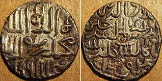
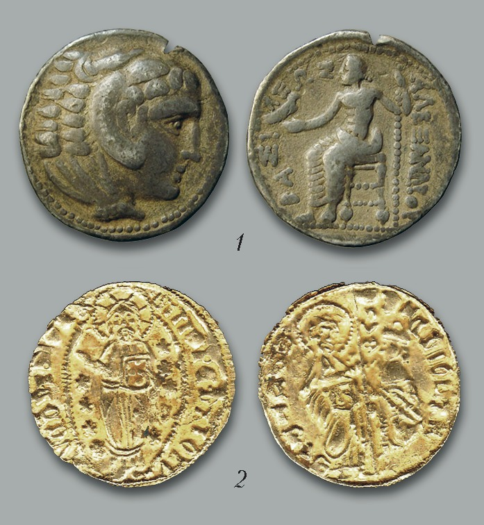

.jpeg)

Tangalar o'tmishning eng muhim guvohlaridir. Ular tarix haqida, uzoq o‘tmishdagi siyosiy, iqtisodiy munosabatlar, dunyoqarashtizimlari, ishonch, e’tiqodlar haqida, badiiy tasavvurlar to'g'risida bebaho ma’lumotlami o‘zida saqlaydi. Tangalarning tarix haqida so‘zlovchi «tilb> o‘ziga xos
Ba’zi tangalar o‘tmish voqea-hodisalari haqida shu qadar aniq xabarlar beradiki, natijada u yoki bu tanganing dunyoga kelishi ham shu axborotning o‘zidan ma’lum bo‘ladi. Boshqa tangalarning ma’lumotlari esa, unutilgan voqealar bilan bog‘liq bo‘lgani uchun mavhum bo‘ladi. Ulaming ma’nosini chin tarixiy jarayon bilan bog‘lash g‘oyat murakkab tadqiqotlami, taqqoslash, tahlil kabilami talab qiladi. Tangalarda yetib kelgan yozuvlar ba’zan unutilgan, tasvirlardagi odam, hay von va boshqa ifodalar haqida tarixiy ma’lmotlar yo‘qotilgan hollar ham ko‘p uchraydi. Tangalar, ularni tarix bilan bogMab o‘rganish ishi bilan numizmatika fani shug‘illanadi. Numisma - «tanga» (lotincha) demakdir. Tanga birinchi galda - pul, ya’ni tovar oldi-sotdi munosabatlarining qiymat belgisi va qiymat ashyosi. Insoniyat hayotida uning o‘mi va roli beqiyos darajada katta bo‘lib kelgan
Tanga (pul shakli sifatida) paydo bo‘lmasdan avval «savdo» munosabatlarining mohiyati amalda almashuvdan iborat bo‘lgan desak xato bo‘lmaydi. Almashuv zaruriyati esa, o‘z navbatida mehnat taqsimotining oqibati edi. Sof ma’noda to‘la-to‘kis natural xo‘jalik jamiyat taraqqiyotini ta’minlashga qodir emas edi. Zero, buning majmui o‘zi uchun barcha zarur narsalami ishlab chiqarishga qodir emas edi. Shu sababli o‘z imkoniyati va mehnat turining mahsulotidan ortiqchasini boshqa xo‘jalikda yetishtirilgan, lekin qo'shni, uzoq yaqin jamoalarda yetishtirilgan mahsulotga almashtirish zaruriyati doimo ko‘ndalang bo‘laverar edi. Bir jamoa (qabila, urug‘) ma’lum mahsulotni yetishtirish uchun xomashyoga ega, boshqasida esa bu imkon yo‘q. Biroq, boshqa jamoa birinchisi uchun kerak narsaga ega. Shunday hollarda almashuv sodir bo‘lgan. Asta-sekin almashuvning bu turi (fil suyagi) tomonlami hamma vaqt ham qanoatlantirmasligi ay on bo‘la boradi. Chunki, har bir vaziyatda almashuv uchun kerak mahsulot ishonch bilan topilavermaydi. Natijada, tovar mahsulotning eng qadrli yoki noyob hisoblangan turi, ba’zan hatto, ramziy ma’no beruvchi narsadan almashuvga qo‘yilayotgan har qanday tovami olish uchun ramziy yoki shartli qiymat sifatiida foydalanish odati boshlanadi. Ya’ni tovar-ekvivalentligi asosiga qurilgan ilk «savdo» munosabatlari boshlanadi.
Tanga ko‘rinishidagi yupqa metall parchalari yuzasiga - o‘ngu-tersiga tamg‘alar urila boshlashi pul birliklarini haqiqiy ma’noda numizmatik materialga aylantirgan. Chunki, endi pulda daviat belgisi, uni zarb qildirgan hukmdoming tasviri, o‘sha davr mafkurasi bilan bog‘liq ramziy shakllar, obrazlar (xudolar, farishtalar, qahramonlar, totem ramzlari va h.k.), paydo bo‘ladi. Tangalarda turli tasvirlaming paydo bo‘lishi ularni muhim tarixiy manbaga aylantiradi. Endi tanga shunchaki metall parchasi emas* balki iqtisodiy munosabatlar, xalqaro aloqalar, siyosiy hayot, mafkuraviy qarashlar, metalga ishlov berish texnologiyasi, yozuv madaniyati, tasviriy san’at va boshqa ko‘plab sohalar taraqqiyotining bebaho namunasidir. Ilmiy soha sifatida numizmatikaning shakllanishida yig‘machilik (kolleksiyachilik) dastlabki qadam bo‘lib xizmat qilgan. Yig‘machilik keng ma’noda qadimgi davrlarga oid noyob ashyolami to‘plash, ularni namoyish qilish bilan faxrlanish, antikvar buyumlarni boylik sifatida tushunish tarzida boshlanib, asta-sekin yig‘ilgan buyumlardan ma’no qidirish, ularni tasnif qilib, guruhlar ichida va guruhlararo umumiy va xos xususiyatlarni o‘rganish sari rivojlangan. Yig‘ilgan ashyolarning tavsiflari, kataloglari tuzila boshlagan. Ko‘p hollarda antikvar buyumlar bilan ishlashga boy-badavlat egalari mutaxassislarni taklif etganlar. Tarix fanining yordamchi sohalari ichida o‘z 0‘rniga ega bo‘lgan numizmatika, mamlakatimiz istiqlolga erishlandan keyin uning nufuzi yanada ortdi, mustaqil tarix fani sifatidagi maqomga ega bo‘ldi. Chunki, tariximizni o‘rganishda tangashunoslik fanining ahamiyati beqiyosdir. Tangalai* bizga eramizdan awalgi davrdan to hozirgi kungacha bo‘Lib o‘tgan tarixiy voqealar siyosiy iqtisodiy, ayrim hollarda esa, millatlaming e’tiqodiy dunyoqarashlari haqida ma’lumot beradi
Dastlabki tangashunoslikning izlanishlari natijasida ilk bor XIV asrda Andreo Fulvinoning yunon va rim tangalari ifodalangan «Taniqli kishilar tasviri» nomli kitobi nashr etildi. Ushbu kitob mashhur hukmdorlaming tasviri va ulaming hayoti haqida qisqacha ma’lumot berganligi bilan mazkur tadqiqot qiziqish uyg‘otdi. Keyinchalik 1553 yili Giloma Rud «Dunyo yaratilgandan buyon yashagan taniqli kishilaming tangalardagi hayoti va faoliyati haqida qisqacha ma’lumot» nomli kitobini o‘quvchilarga taqdim etdi. Bu adabiyotlar XVI asrda juda katta nufuzga ega bo‘lgan. Tangashunoslik ilmi kashshoflarini XIV-XVI asrlarda tangalardagi hukmdorlar qiyofasi va tarjimai holi qiziqtirgan bo‘Isa, XVIII asrda bu fanni ilmiy nuqtai nazardan rivojlantirish katta ahamiyat kasb etdi. Avstraliyalik ruhoniy Iosif-Ilariy Ekkel (1738-98) sakkiz jilddan iborat «Qadimgi tangalar ilmi» nomli kitobida 70 mingdan ziyod tangalarga tartib berdi. Aniqlay olmagan tangalar haqida hech qanday faraz qilmagan, ulami noma’lumlar qatoriga qo‘shib qo‘ygan, ko‘p mamlakatlami tanga turlarini aniqlay olmagan. XVIII asrda sharqiy numizmatikada bir necha ming tanga pul bo‘lgan, ammo ulami shu vaqtga qadar tadqiq qiluvchi bo‘lmagan. Rossiya FA akademigi Xristian Martin Fren sharqiy numizmatikaga asos solgan kishidir. U Qozonda yashab Oltin 0 ‘rda xonlari tomonidan zarb qilingan tangalami o‘rganish uchun juda boy manbaga ega bo‘lgan. Fren nemis bo‘lganligi uchun tez orada Germaniyaga chaqirishgan, yo‘l-yo‘lakay Peterburgda tocxtagan, u yerda Fanlar akademiyasida to‘plangan tangalarni ko‘rgach, tashlab keta olmagan, butunlay Rossiyada qolib butun umrini sharq tanga pullarini o‘rganishga bag‘ishlagan
Hozirgi kunda jahon bozorida turli xil tanga va pul birliklarining nomlarini uchratish mumkin. Qadimgi tetradraxma, draxma, gemidraxma, obol, dinor, dirham, lira va hokazo nomli tangalar mavjud bo‘lgan. Bu nomlaming kelib chiqishi ham bir - biri bilan uzviy bogMiqdir. Masalan: Yunon draxmalaridan sharqiy dirham, Rim dinariylaridan dinor va boshqa shu kabi pul nomlari hosil bo‘lganligi hammaga ma’lum. Qadimgi tangalar ikki xil: 1) quyma 2) zarblangan uslubda tayyorlangan, quyma tangalar maxsus shakl va tasvir qo'yilgan qolip idishlarga ma’dan quyib tayyorlangan. Ikkinchisi esa, temir yoki bronzadan ishlangan muhr-shteinpelda (tanganing o‘ngi va tersi naqsh etilgan maxsus asbobda) tangalar ifodasi tayyorlanib, kerakli metall quymasi ustiga zarblangan. Birnichi uslubda tanga sathidagi tasvir noaniq bo‘lganligidan tezda o‘chib ketishi sababli miloddan awalgi VII asrga kelib zarblangan tangalar keng miqyosda qo'llanadigan bo‘ldi va shundan buyon tangalar faqat zarblangan holda muomalaga chiqarib kelinmoqda